한 기능을 맡는 회사
트럭 회사
창고
통관사
운송, 보관, 통관처럼 각 단계의 전문 기능을 맡습니다.
물건은 어떻게 준비되고,
어떤 흐름을 통해 움직이는가
운송, 보관, 통관처럼 각 단계의 전문 기능을 맡습니다.
여러 물류 기능을 묶고, 전체 과정을 관리하거나 조율합니다.
쿠팡, 아마존과 같이 독자적인 플랫폼으로 주문, 보관과 포장, 배송 등 모든 부분을 담당하는 대형 기업도 있습니다.
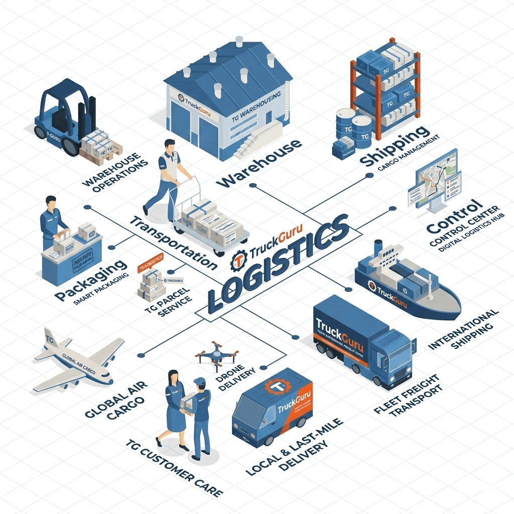
Freight forwarding은 화물의 조건에 맞춰 운송 경로와 관계자를 연결하고, 다음 단계로 넘어갈 수 있도록 운송을 주선하고 조율하는 일입니다.
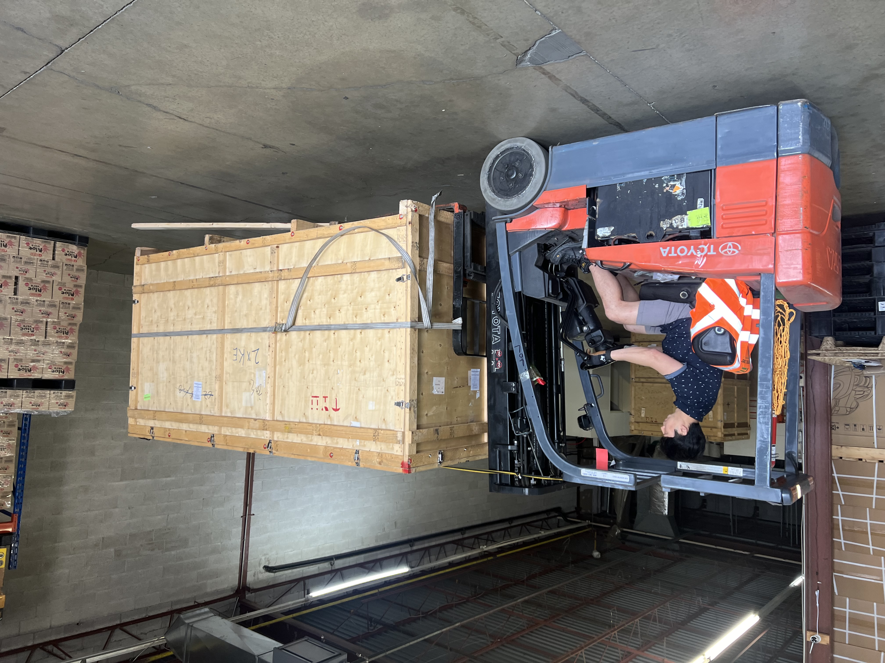
특별한 조건이 필요한 화물일수록, 운송 방식과 준비 과정도 달라집니다.
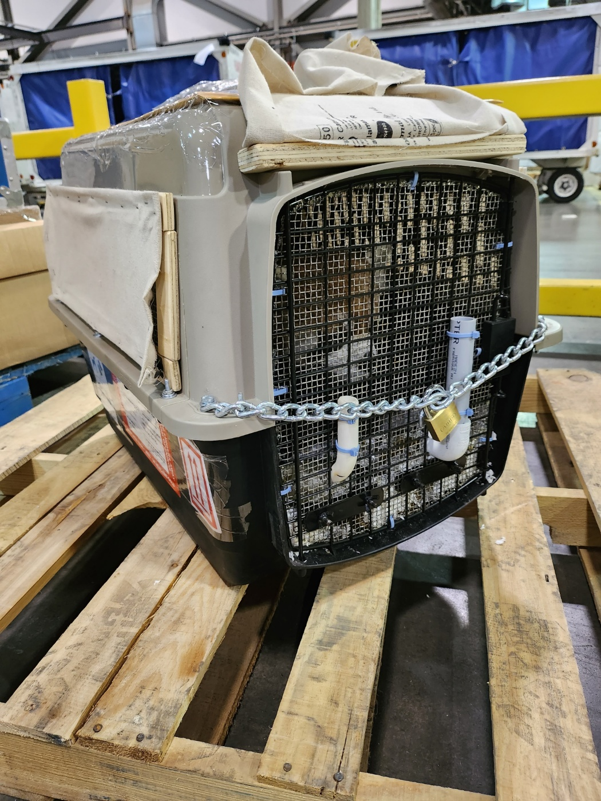
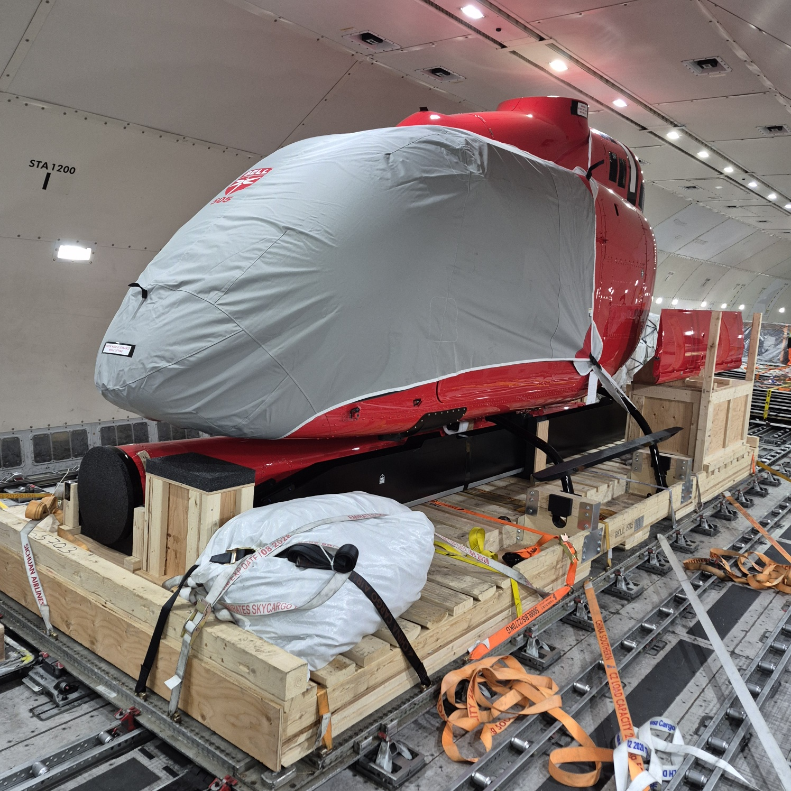
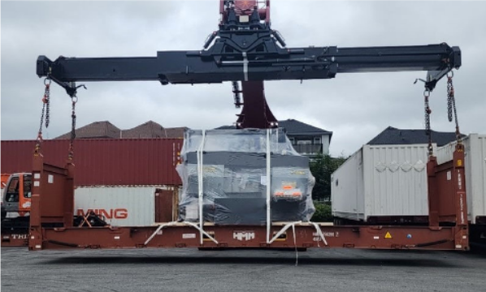
창고에서는 물건을 보관하고, 포장하고, 출고를 준비합니다.
자체 트럭을 운영해 외부 운송사 의존도를 낮추고, 비용과 일정 면에서도 경쟁력을 갖추고 있습니다.
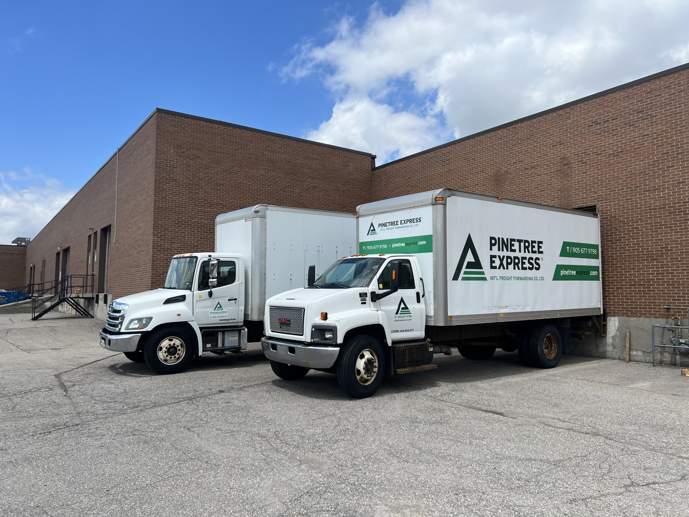
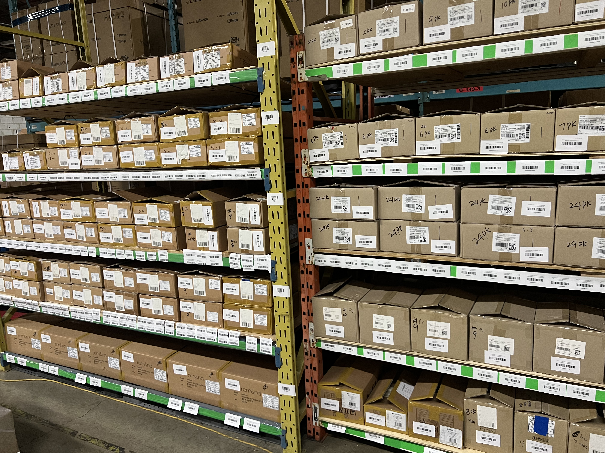
한국의 수출자와 캐나다의 수입자 사이에서, 물건과 정보를 다음 단계로 넘길 수 있게 조율합니다.
물건이 떠나기 전에 정해야 하는 것들
같은 박스라도 언제, 왜, 얼마나 보내는지에 따라 답이 달라집니다.
시간이 우선인 상황
물량과 비용을 함께 봐야 하는 상황
운송을 잡기 전에 물건, 목적, 도착 후의 다음 단계를 함께 정리합니다.
제품의 조건을 확인합니다.
샘플인지, 판매용인지 봅니다.
창고, 수입자, 유통을 생각합니다.
포워더는 화물의 특성에 따라 최적의 운송 방식을 조율하고, 운송을 주선합니다.
캐나다 안에서 움직일 수 있도록 준비하는 일
도착 예정 정보를 받고, 통관과 이후 트럭·창고 이동을 미리 맞춥니다.
도착 예정 정보를 받습니다.
수입자와 필요한 정보를 맞춥니다.
트럭과 창고를 준비합니다.
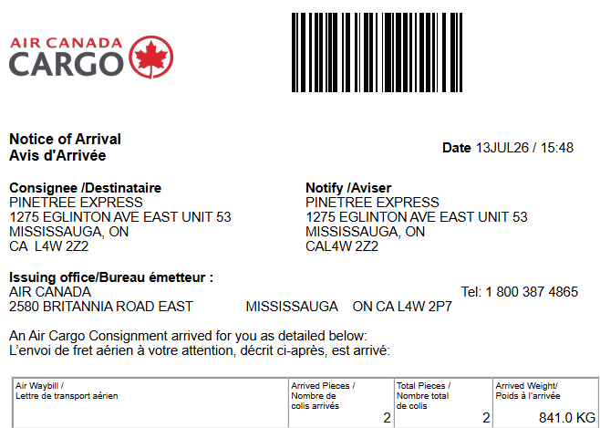
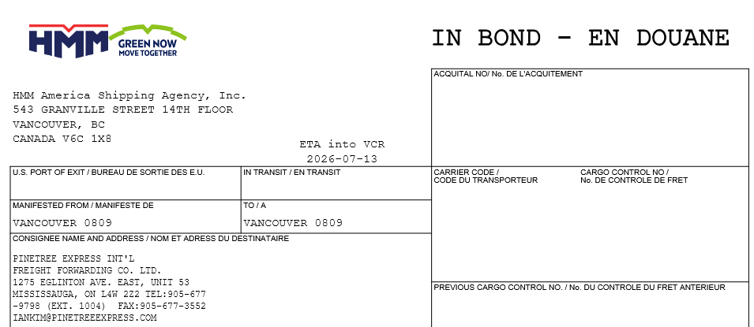
서류 이름을 외우기보다, 정부와 시장이 이 제품을 이해할 수 있는 정보를 준비하는 일에 가깝습니다.
제품을 정확하게 설명합니다.
원산지와 이동 정보를 맞춥니다.
수입자와 책임 주체를 확인합니다.
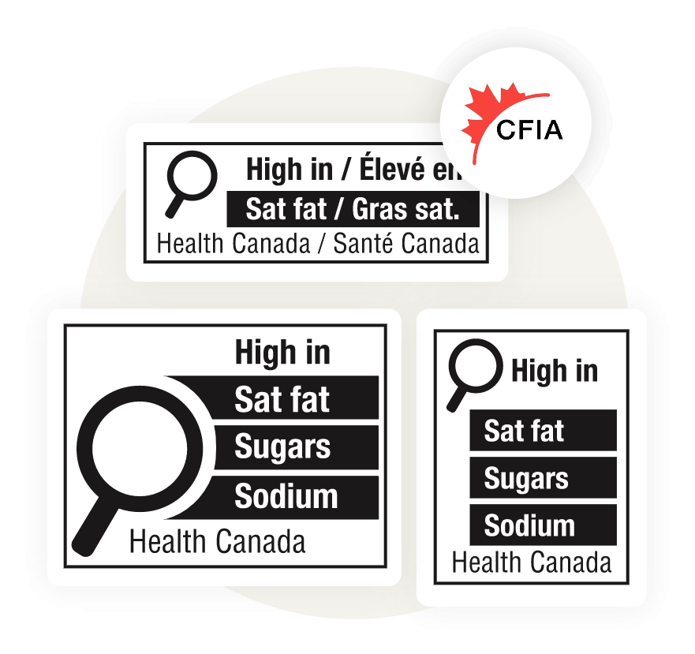
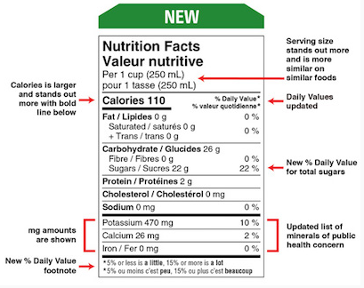
물건 하나가 움직이기 전에는 생각보다 많은 준비와 연결이 있습니다.